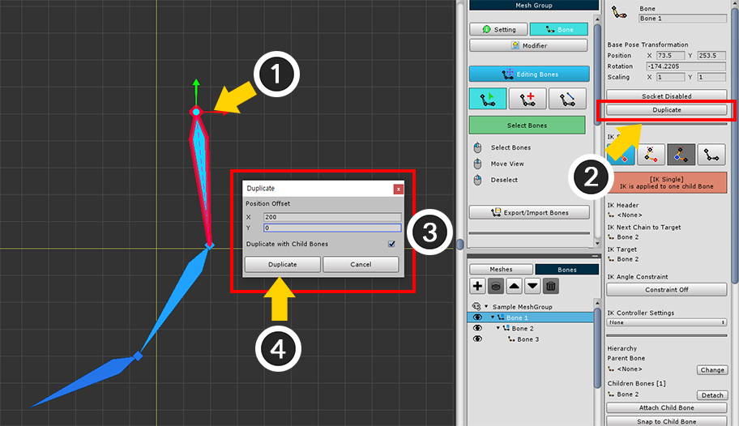
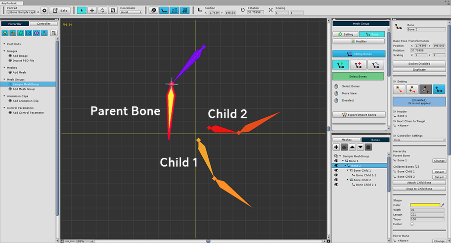

AnyPortrait > マニュアル > ボーンの複製/子骨スナップ
ボーンの複製/子骨スナップ
1.1.8
骨の複製

(1) 複製しようとする骨を選択します。
(2) プロパティのUIで「Duplicate」ボタンを押します。
(3) 「Duplicateダイアログ」で「複製先（Offset）」と「子骨も一緒に複製するかどうか」を設定します。
(4) ダイアログの「Duplicate」ボタンを押します。

骨が複製されていることを見ることができます。
IK設定などもようにコピーされます。
子骨スナップ

骨を追加する場合、多くの場合、上の画像のように、親の骨と子の骨が落ちて配置されたりします。
親の骨が子骨に必ず接続する必要はありません。
しかしながら、作業の利便性やIKの設定などの理由で、親の骨を子骨に接続させるように作ろうとする必要があります。
このときは「スナップ（Snap）」機能を利用して、簡単に設定することができます。
上の画像での「親の骨（Parent Bone）」を「子の骨（Child 1）」に接続してみましょう。

(1) 親ボーンを選択します。
(2) 「Snap to Child Bone」ボタンを押します。
選択された親ボーンの子が1つであれば、この段階では、親の骨と子の骨が接続されます。
逆に、子骨が2つ以上ならどの子に接続すべきかを選択するダイアログが表示されます。
(3) 接続しようとする子の骨を選択します。
(4) 「Select」ボタンを押します。

親ボーンが回転され、長さが変わって子骨接続されたことを見ることができます。